商品介紹
向您介紹本店熱賣的地毯。
-
方塊地毯
-
人工草地
-
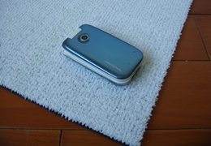
人工草地/人造草地
絨毛型態 : 刺繡剪毛
紅.綠.黑.白可供選擇！
毯面纖維 : 100% 合成纖維
染色方式 : 原液染色絲
地層基布 : 黑色聚酯網狀布每才20元
-
-
條毯
-
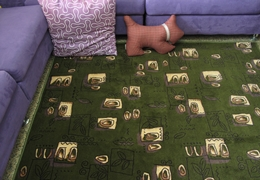
樹葉種子圖案條毯
120cm*180cm，頂級尼龍，有別於一般珊瑚絨的舒服！
-
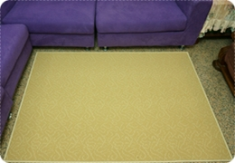
黃色迷宮花紋(X-907)條毯
120cm*180cm。 -
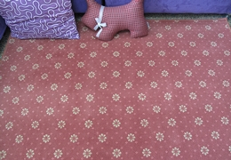
紅底白花條毯(vii-102)
紐西蘭進口羊毛！
其他鋪設照！
120cm*180cm。 -
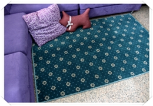
寶綠底黃花條毯(vii-101)
紐西蘭進口羊毛！
120cm*180cm。
其他鋪設照！1,000元
-
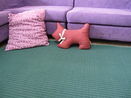
寶綠底長條凹紋條毯(X-902)
適合鋪於客廳！
120cm*180cm。
其他鋪設照! -
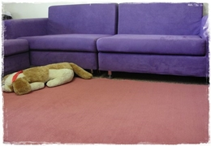
超厚素色桃紅條毯(F-08)
120cm*180cm。 -
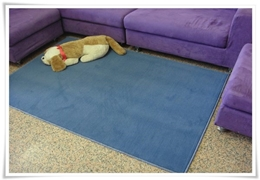
超厚素色憂鬱藍條毯(F-06)
120cm*180cm。 -
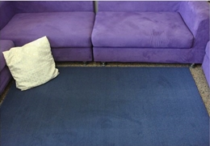
超厚素色憂鬱藍條毯(F-05)
120cm*180cm。 -
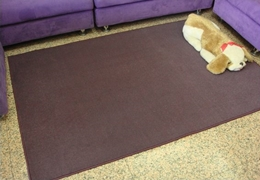
超厚深咖啡素色條毯(F-04)
120cm*180cm。
-
-
滿鋪地毯
-
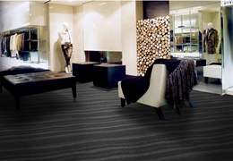
II-G00系列
水波條紋地毯
總共三種顏色。
-
-
噴染訂做地毯
-
團團圓圓熊貓噴染地毯
極致黑與黑的中國風地毯！
最大寬360cm。 -
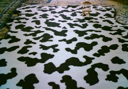
乳牛紋地毯
噴染頂級客製化。
非常好看。
-